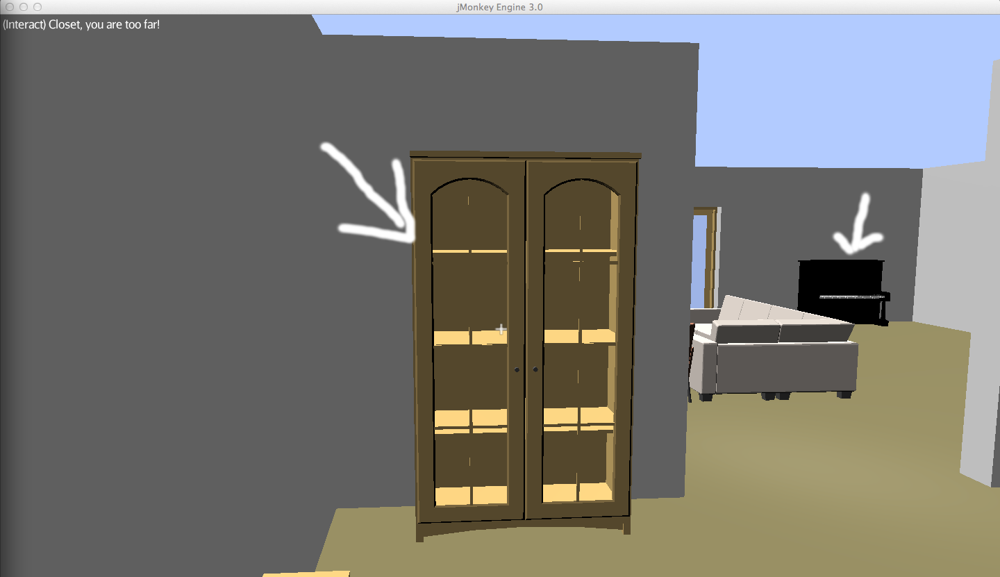
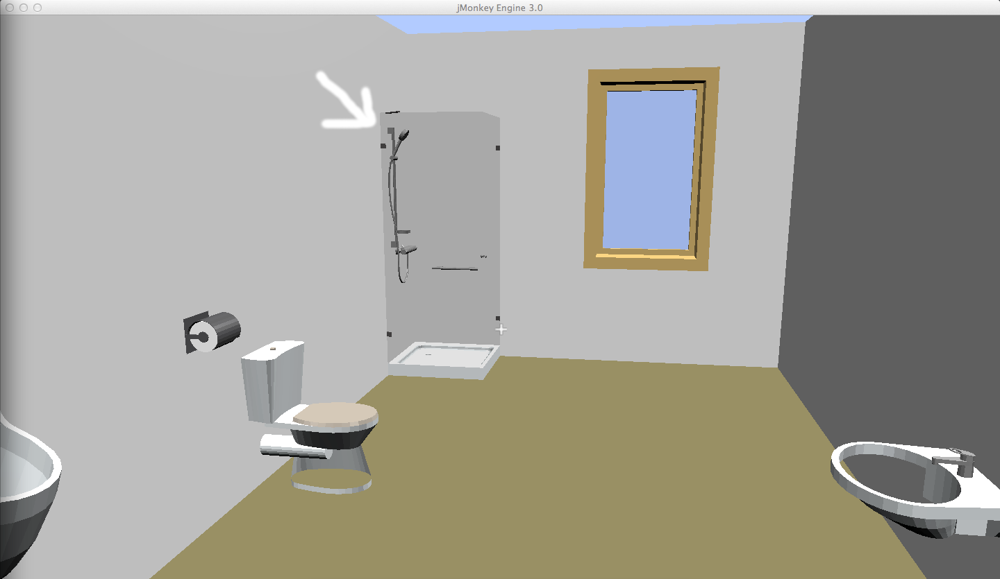
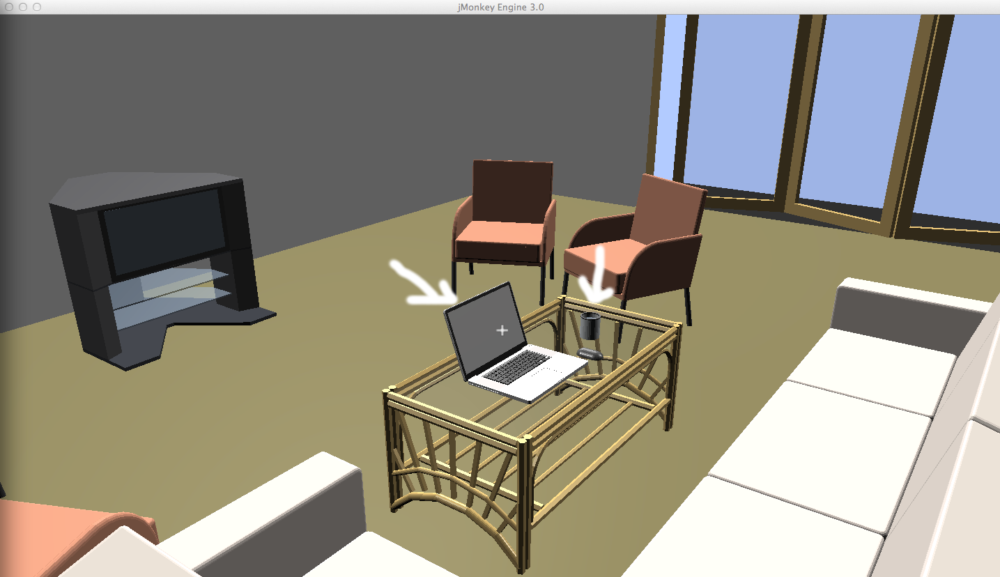
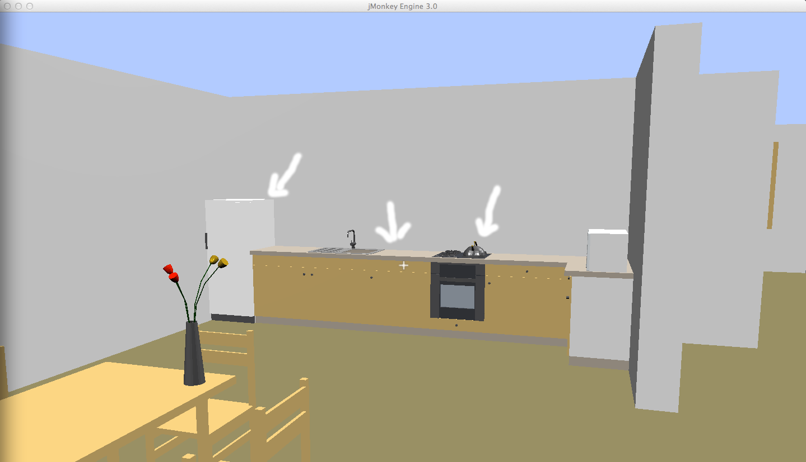

Useful Tips
After you exit or close the APP, the process running them might get stuck. You will need to identify it in your operating system's task manager and "force close" it. Depending on your OS, it will be either the tasks name, WarmUpTask or ALFTask, or simply an instance of your local jre run.
Link to the ContextClient.
Prerequisites
Get the simulator from http://itu.dk/people/ksza/bodysim/task1
Make sure you can hear audio feedback from your computer! Have you volume turned up and, if necessary, your earphones at hand.
Task 1 - Assisted Living Facility
An assisted living facility (ALF) is a housing facility for people with disabilities. These facilities provide supervision or assistance with activities of daily living (ADLs) and monitoring of resident activities to help ensure their health, safety, and well-being. Basic ADLs consist of self-care tasks, including: dressing, eating and feeding, bathing and showering etc. Constantly monitoring and predicting the activities of residents is imperative for software services in the ALF.
For this task, please imagine yourself as the researcher of a monitoring system for ALFs. The system has to monitor the surroundings of the resident in real-time and provide this information to third party software service. One example of such a service is the "ADL Assistance Service" (ADL Service). This service detects whenever the resident is close enough to everyday objects to start interacting with them. If the object is usually used in a daily living activity, the service asks the resident, by means of the smart watch s/he's wearing, if s/he needs assistance with this activity. In case of a positive answer, a caregiver is immediately sent over. Please note that the ADL Service is purely conceptual; it is not implemented neither is its implementation target of this task! I am referring to it to exemplify the usability of the SSM the in various situations throughout the simulation.
You decided to design your system based on the egocentric interaction paradigm, as it can categorizes all the objects of interest around the human agent. Based on these sets, you can further develop software services to assist the residents in their ADLs.
In this task you are given a ready made simulation of the system for such an environment. You will be simulating a resident's interaction with the ALF by means of the virtual agent, completing a series of activities the resident does throughout his morning routine.You will be evaluating the usability of the simulator, the responsiveness of the ContextClient, the correctness and usability of the SSM sets, as well as how intuitive is the interaction with the environment. The pictures bellow depict the object you will be asked to interact with.
|  |  |
|  |  |
The story unfolds with the following steps:
- 1. You wake up in your bedroom. You just got off your bed; now walk towards the Closet in your bedroom. If you get close enough, the Closet will be added to the ActionSpace. Take note of this in the ContextClient. At this point, if the ADL Service would be implemented, it should ask the resided if s/he needs assistance with "getting dressed".
- 2. Next, got into the bathroom. Approach the Shower, when close enough, it will be in the ActionSpace. Again, if the ADL Service would be implemented, it should detect a highly possible activity and would asks the resident if s/he needs assistance with "takings a shower".
- 3. Go to the living room, pick up the cup and go to the kitchen. Place it near the Stove (on the Sink counter-top), pick up the coffee Pot and try pouring coffee into the cup. This kind of action is not implemented visually (pouring coffee), but you will see that the system knows exactly what you are doing (if the volume of your computer is turned one, you might be able to hear the audio feedback as well)! You will notice that the series of actions in this step are possible only if the items you are interacting with are in the ActionSpace.
- 4. Approach the Fridge. When close enough, it will be in the ActionSpace. If the ADL Service would be implemented, it should ask the resident if s/he needs assistance feeding.
- 5. Try interacting with the laptop to read your email (if the volume of your computer is turned one, you might be able to hear the audio feedback as well). The action is not visually implemented, you will get a system message instead!
- 6. As a last step, walk around the apartment and observe how various objects get categorized, added/removed from SSM sets, as they enter/leave the view sight oh the agent, and as the agent gets closer/further from them.
There's an easter egg hidden somewhere around, have you found it? If no, then try interacting with the piano. Interact with it a few times :).
When you arrive to this point, you have successfully performed the task!
Task 1 - Evaluation Form (this will be a link to a proper questionnaire)
As a participant to this study, you will be treated anonymously, your personal identity and personal data will remain undisclosed!Please go to Survey 1 to answer the questions for this task.